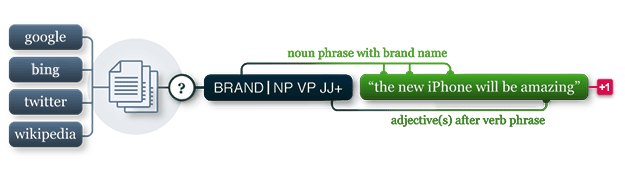

pattern.dev
Pattern is a web mining module for the Python programming language.
Pattern is written in Python with extensions in JavaScript. The source code is hosted on GitHub. It is licensed under BSD, so it can be freely incorporated in proprietary applications. Contributions and donations are welcomed.
There are six core modules in the pattern package: web | db | text | search | vector | graph.

Topics
Contribute
The source code is hosted on GitHub (see http://ithub.com/clips/pattern). GitHub is an online project hosting service with version control. Version control tracks changes to the source code, i.e., it can be rolled back to an earlier state or merged with revisions from different contributors.
To work on Pattern, create a fork of the project, a local copy of the source code that can be edited and updated by you alone. You can manage this copy with the free GitHub application (windows | mac). When you are ready, send us a pull request and we will integrate your changes in the main project.
Let us know if you encounter a bug. We prefer if you create an issue on GitHub, so that (until fixed) the problem is visible to all users of Pattern. There is a blue button for donations on the main documentation page. Please support the development if you use Pattern commercially.
Dependencies
There are six core modules in the package:
| Module | Functionality |
| pattern.web | Asynchronous requests, web services, web crawler, HTML DOM parser. |
| pattern.db | Wrappers for databases (MySQL, SQLite) and CSV-files. |
| pattern.text | Base classes for parsers, parse trees and sentiment analysis. |
| pattern.search | Pattern matching algorithm for parsed text (syntax & semantics). |
| pattern.vector | Vector space model, clustering, classification. |
| pattern.graph | Graph analysis & visualization. |
There are two helper modules: pattern.metrics (statistics) and canvas.js (visualization).
Design philosophy
Pattern is written in Python, with JavaScript extensions for data visualization (graph.js and canvas.js). The package works out of the box. If C/C++ code is bundled for performance (e.g., LIBSVM), it includes precompiled binaries for all major platforms (Windows, Linux, Mac).
Pattern modules are standalone. If a module imports another module, it fails silently if that module is not present. For example, pattern.text implements a parser that uses a Perceptron language model when pattern.vector is present, but falls back to a lexicon of known words and rules for unknown words if used by itself. A single module can have a lot of interdependent classes, hence the large __init.__.py files.
Pattern modules can bundle other BSD-licensed Python projects (e.g., BeautifulSoup). For larger projects or GPL-licensed projects, it provides code to map data structures.
Base classes
In pattern.web, each web service (e.g., Google, Twitter) inherits from SearchEngine and returns Result objects. Each MediaWiki web service (e.g., Wikipedia, Wiktionary) inherits from MediaWiki.
In pattern.db, each database engine is wrapped by Database. It supports MySQL and SQLite, with future plans for MongoDB. See Database.connect(), escape(), _field_SQL() and _update().
In pattern.text, each language inherits from Parser, having a lexicon of known words and an optional language model. Case studies for Spanish and Italian show how to train a Lexicon. A bundled pattern.vector example shows how to train a Perceptron Model.
In pattern.vector, each classifier inherits from Classifier (e.g., KNN, SVM). Each clustering algorithm is available from Model.cluster().
In pattern.graph, subclasses of Node or Edge can be used with (subclasses of) Graph by setting the base parameter of Graph.add_node() and add_edge(). Each layout algorithm (e.g., force-based springs) inherits from GraphLayout.
Documentation
Each function or method has a docstring:
def find(match=lambda item: False, list=[]):
""" Returns the first item in the given list for which match(item) is True.
"""
for item in list:
if match(item) is True:
return itemThe docstring provides a concise description of the type of input and output. In Pattern, a docstrings starts with "Returns" (for a function) or "Yields" (for a property). Each function has a unit test, to verify that it is fit for use. Each function has an engaging example, bundled in the package or in the documentation.
Pattern does not have a documentation framework. The documentation is written by hand and in constant revision. Please report spelling errors and examples with bugs.
Coding conventions
Whitespace
The source code is not strict PEP8. For example, additional whitespace is used so that property assignments or inline comments are vertically aligned as a block:
class Table(object):
def __init__(self, name, database):
""" A collection of rows with one or more fields of a certain type.
"""
self.database = database
self.name = name
self.fields = [] # List of field names (i.e., column names).
self.schema = {} # Dictionary of (field, Schema)-items.
self.default = {} # Default values for Table.insert().
self.primary_key = None
self._update()Whitespace is sometimes used to align dictionary keys and values:
url = URL('http://search.twitter.com/search.json?', method=GET, query={
'q': query,
'page': start,
'rpp': min(count, 100)
})Class and function names
Single words are preferred for class names. Compound terms use CamelCase, e.g., SearchEngine or AsynchronousRequest. Single, descriptive words are preferred for functions and methods. Compound terms use lowercase_with_underscore. If a method takes no arguments, it is a property:
class AsynchronousRequest:
@property
def done(self):
return not self._thread.isAlive() # We'd prefer "_thread.alive".while not request.done: ...
Variable names
The source code uses single character names abundantly. For example, dictionary keys and values are k and v, a string is s. This is done to make the structure of the algorithm stand out (i.e., the actual function and method calls):
def normalize(s, punctuation='!?.:;,()[] '):
s = s.decode('utf-8')
s = s.lower()
s = s.strip(punctuation)
return sFrequently used single character variable names:
| Variable | Meaning | Example |
| a | array, all | a = [normalize(w) for w in words] |
| b | boolean | while b is False: |
| d | distance, document | d = distance(v1, v2) |
| e | element | e = html.find('#nav') |
| f | file, filter, function | f = open('data.csv', 'r') |
| i | index | for i in range(len(matrix)): |
| j | index | for j in range(len(matrix[i])): |
| k | key | for k in vector.keys(): |
| n | list length | n = len(a) |
| p | parser, pattern | p = pattern.search.compile('NN') |
| q | query | for r in twitter.search(q): |
| r | result, row | for r in csv('data.csv): |
| s | string | s = s.decode('utf-8').strip() |
| t | time | t = time.time() - t0 |
| v | value, vector | for k, v in vector.items(): |
| w | word | for i, w in enumerate(sentence.words): |
| x | horizontal position | node.x = 0 |
| y | vertical position | node.y = 0 |
Dictionaries
The source code uses dictionaries abundantly. Dictionaries are fast for lookup. For example, pattern.vector represents vectors as sparse feature → weight dictionaries:
v1 = document1.vector v2 = document2.vector cos = sum(v1.get(w,0) * f for w, f in v2.items()) / (norm(v1) * norm(v2) or 1)
Pattern algorithms are profiled and optimized with caching mechanisms.
List comprehensions
The source code uses list comprehension abundantly. It is concise, and often faster than map(). However, it can also be harder to read (a comment should be added).
def words(s, punctuation='!?.:;,()[] '):
return [w.strip(punctuation) for w in s.split()]
Ternary operator
Previous versions of Pattern supported Python 2.4, which does have the ternary operator (single-line if). A part of the source code still uses a boolean condition to emulate it:
s = s.lower() if lowercase is True else s # Python 2.5+
s = lowercase is True and s.lower() or s # Python 2.4
With boolean conditions, care must be taken for values 0, '', [], (), {}, and None, since they evaluate as False and trigger the or-clause.
Code quality
The source code has about 25,000 lines of Python code (25% unit tests), 5,000 lines of JavaScript, and 20,000 lines of bundled dependencies (BeautifulSoup, PDFMiner, PyWordNet, LIBSVM, LIBLINEAR, etc.). To evaluate the code quality, pylint can be used:
> cd pattern-2.x > pylint pattern --rcfile=.pylintrc
Important pylint id's are those starting with E (= possible bugs).
The .pylintrc configuration file defines a number of custom settings:
- Instead of 80 characters per line, a 100 characters are allowed.
- Ignore pylint id C0103, single-character variable names are allowed.
- Ignore pylint id W0142, *args and **kwargs are allowed.
- Ignore bundled dependencies.
The source code scores about 7.38 / 10. A known issue is the absence of docstrings in unit tests.
Language support
Pattern currently has natural language processing tools (e.g., pattern.en, pattern.es) for most languages on the to-do list. There is no sentiment analysis yet for Spanish and German. Chinese is an open task.
| Language | Code | Speakers | Example countries |
| Mandarin | cmn | 955M | China + Taiwan (945), Singapore (3) |
| es | 350M | Argentina (40), Colombia (40), Mexico (100), Spain (45) | |
| en | 340M | Canada (30), United Kingdom (60), United States (300) | |
| de | 100M | Austria (10), Germany (80), Switzerland (7) | |
| fr | 70M | France (65), Côte d'Ivoire (20) | |
| it | 60M | Italy (60) | |
| nl | 25M | The Netherlands (25), Belgium (5), Suriname (1) |
There are two case studies that demonstrate how to build a pattern.xx language module: